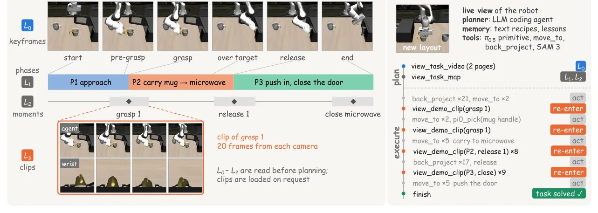
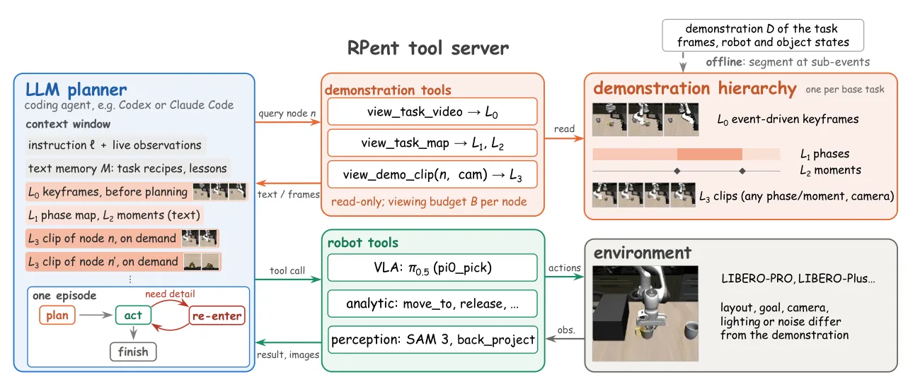
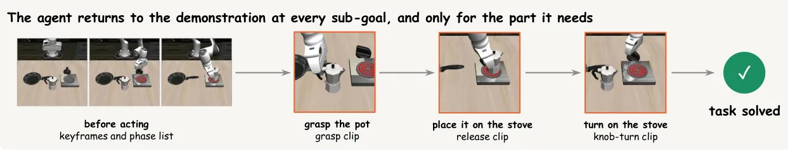
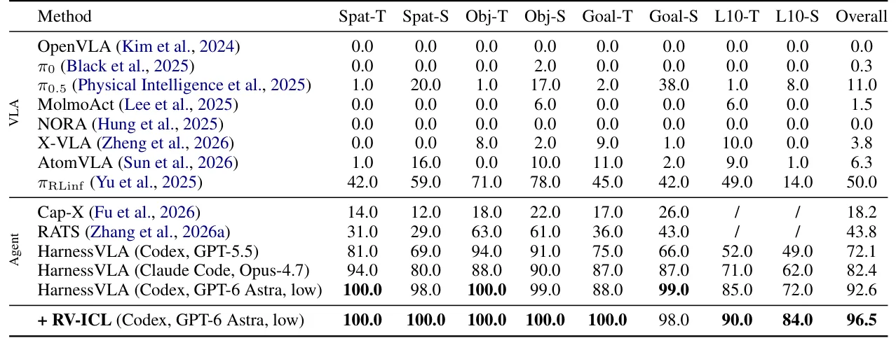

O problema: memória de texto não captura como fazer
Agentes robóticos baseados em LLMs estão cada vez mais usados como camada de planejamento: eles decompõem instruções, localizam objetos e chamam políticas visuomotoras treinadas para executar os passos de contato que não podem ser resolvidos analiticamente. Sistemas recentes como o HarnessVLA (lançado como framework RPent) expõem uma política congelada de visão-linguagem-ação (VLA) como uma primitiva entre outras, e deixam o agente orquestrar as chamadas. O agente melhora entre episódios através de memória textual: receitas, lições aprendidas e regras de falha.
Esse design supera políticas VLA end-to-end quando há mudanças na distribuição dos dados. Mas o quanto o agente pode melhorar é limitado pelo que texto consegue registrar. A memória é escrita a partir dos próprios traços de execução do agente, então ela descreve as chamadas e seus resultados, não a tarefa em si. O agente pode registrar que uma pegada falhou, mas não como uma execução bem-sucedida se parece: qual objeto é pego primeiro, de que lado a mão se aproxima, a que altura o objeto é levantado, quando o gripper abre.
Esse conhecimento é espacial e temporal, difícil de colocar em palavras. Mas é fácil de mostrar: um vídeo da tarefa captura tudo isso, frame a frame. Esse vídeo também é barato de obter — uma demonstração humana só exige gravar uma pessoa executando a tarefa, sem rótulos de ação ou outra anotação. Modelos grandes conseguem aprender com demonstrações colocadas em seu contexto, em texto e com imagens intercaladas. Isso sugere deixar o agente assistir uma demonstração da tarefa, como uma pessoa assiste um tutorial antes de tentar algo novo.
Por que simplesmente colocar o vídeo no contexto não funciona
Mas em que forma o vídeo deve entrar na memória do agente? As respostas óbvias falham por três razões. Primeiro, comprimento: uma demonstração tem centenas de frames, e o agente relê todo o contexto a cada um de seus dezenas ou centenas de turnos. Contextos longos também degradam o quanto modelos usam seu conteúdo. Segundo, resolução: alguns keyframes são viáveis, mas eles descartam os frames ao redor de cada contato, que decidem se uma pegada segura ou um posicionamento registra.
Terceiro, timing: o que o agente precisa muda ao longo do episódio. Antes de agir, ele precisa da estrutura da tarefa. Uma vez que alcança um passo específico, precisa dos frames ao redor daquele contato particular. Nenhuma apresentação fixa do vídeo consegue satisfazer as três restrições ao mesmo tempo.
É aí que entra o Recursive Video In-Context Learning (RV-ICL), proposto por pesquisadores da University of Central Florida e University of Southern California. Em vez de apresentar a demonstração como um prefixo que o agente recebe, o método a transforma em uma hierarquia que o agente navega. A hierarquia é construída a partir dos sub-eventos da demonstração — pegadas, solturas, giros de botão. Seus níveis crescem em granularidade, de keyframes da tarefa inteira até fases, momentos e clipes curtos, e são expostos através de ferramentas read-only.

Como funciona a hierarquia de quatro níveis
A hierarquia tem quatro níveis, construídos offline a partir de uma única demonstração por tarefa. O nível L0 contém keyframes event-driven: frames capturados nos momentos em que o gripper fecha ou abre, ou quando uma junta de fixture (como uma porta de microondas) se move. Esses keyframes mostram a estrutura geral da tarefa, mas não como cada sub-evento é executado.
O nível L1 divide a demonstração em fases, que são os intervalos entre sub-eventos consecutivos. Por exemplo, uma fase pode ser 'carregar a caneca até o microondas', delimitada pela pegada da caneca e pela soltura dentro do microondas. O nível L2 contém momentos: janelas de alguns frames ao redor de cada sub-evento, capturando a transição imediata. O nível L3 guarda clipes de 20 frames de cada câmera, centrados em cada sub-evento.
Os níveis grossos (L0 e L1) são lidos antes do planejamento, dando ao agente uma visão da tarefa completa. Durante a execução, o agente re-entra na hierarquia sempre que um passo precisa de mais detalhe, e carrega apenas o clipe de seu sub-objetivo atual. A hierarquia é exposta através de ferramentas read-only: view_task_video retorna os keyframes L0, view_task_map retorna o mapa de fases L1 e momentos L2 em texto, e view_demo_clip carrega um clipe L3 específico, identificado pelo sub-evento ou fase.
Detecção de sub-eventos e construção da hierarquia
A segmentação automática da demonstração depende de detectar sub-eventos. No benchmark LIBERO, os autores usam dois sinais: a largura do gripper (para detectar pegadas e solturas) e o estado de juntas de fixtures (para detectar aberturas e fechamentos de portas, gavetas ou botões). Um sub-evento de pegada é registrado quando a largura do gripper cai abaixo de um limiar; uma soltura quando ela sobe acima de outro limiar. Mudanças no estado de juntas de fixtures geram sub-eventos de abertura ou fechamento.
Uma vez detectados os sub-eventos, a construção da hierarquia é direta. L0 pega um frame em cada sub-evento. L1 rotula cada intervalo entre sub-eventos consecutivos com uma descrição textual da fase (por exemplo, 'approach', 'carry mug to microwave', 'push in, close the door'). L2 extrai uma janela de frames ao redor de cada sub-evento. L3 corta clipes de 20 frames centrados em cada sub-evento, de cada câmera disponível.
Essa construção assume que a tarefa se decompõe em sub-tarefas que deixam traços observáveis no estado gravado. Tarefas cujos sub-eventos não deixam tais traços — como empurrar, limpar ou despejar — precisariam de outro detector, por exemplo um que leia a trajetória do end-effector ou consulte um modelo de visão-linguagem.

Como o agente usa a hierarquia durante a execução
O agente é um LLM de código (no paper, GPT-6 Astra com baixo esforço de raciocínio, rodando no Codex CLI) que orquestra ferramentas através do framework RPent. Antes de planejar, o agente lê os níveis L0 e L1/L2 da hierarquia, obtendo uma visão geral da tarefa e um mapa textual das fases e momentos. Isso fornece o contexto necessário para decompor a instrução em passos.
Durante a execução, o agente chama ferramentas de robô (como move_to, back_project para localizar objetos, ou a primitiva VLA pi0_pick) e ferramentas de demonstração. Quando um passo precisa de mais detalhe — por exemplo, a política VLA falha em uma pegada — o agente re-entra na hierarquia chamando view_demo_clip com o identificador do sub-evento relevante (por exemplo, 'grasp 1'). A ferramenta retorna apenas o clipe L3 daquele sub-evento, não o vídeo inteiro.
Esse acesso recursivo resolve as três restrições. O comprimento é controlado porque apenas clipes curtos entram no contexto, e só quando necessários. A resolução é preservada porque os clipes L3 contêm os frames ao redor do contato. O timing é respeitado porque o agente escolhe qual clipe carregar com base em seu sub-objetivo atual. A hierarquia age como um índice navegável, não como um prefixo fixo.

Resultados no LIBERO-PRO: de 92.6% para 96.5%
Os autores testaram RV-ICL no benchmark LIBERO-PRO, que tem oito células combinando três tipos de tarefa (Spatial, Object, Goal, LIBERO-10) com dois tipos de perturbação: instruction redirection (T), onde a instrução é reescrita mas a tarefa base é a mesma, e position swap (S), onde as posições dos objetos são trocadas. Cada célula agrega 50 episódios (10 tarefas × 5 seeds) para RV-ICL, comparados com 100 episódios dos baselines reportados por trabalhos anteriores.
O baseline mais forte é HarnessVLA com GPT-6 Astra, que alcança 92.6% de sucesso geral. RV-ICL adiciona a hierarquia de demonstração a esse sistema e eleva o sucesso para 96.5%, um ganho de 3.9 pontos percentuais. Um teste z de duas proporções nas células agregadas mostra que esse ganho é estatisticamente significativo (z = 2.97, p = 0.003 bicaudal).
Os ganhos são especialmente claros nas três células onde HarnessVLA é mais fraco. Goal-T sobe de 88.0% para 100.0%, LIBERO-10-T de 85.0% para 90.0%, e LIBERO-10-S de 72.0% para 84.0%. LIBERO-10 é a suíte de tarefas de longo horizonte do benchmark, onde cada tarefa encadeia várias pegadas e solturas. Os ganhos ali sugerem que o acesso recursivo é especialmente efetivo em tarefas longas, onde a necessidade de detalhe muda ao longo do episódio.

Ablações: por que a hierarquia importa
Os autores testaram quatro formas de apresentar a demonstração, todas nas duas células LIBERO-10 (as mais longas). A primeira é Text: HarnessVLA com memória textual apenas, sem vídeo. A segunda é Keyframes: apenas os keyframes L0 da demonstração. A terceira é Full video: o vídeo completo da demonstração, sem hierarquia. A quarta é RV-ICL: a hierarquia completa com acesso recursivo.
Mostrar a demonstração não é suficiente por si só. Keyframes elevam o sucesso em apenas 1.0 ponto em L10-T e 2.0 pontos em L10-S em relação a Text. O vídeo completo fica 1.0 ponto abaixo de Text em L10-T e 6.0 pontos abaixo em L10-S. RV-ICL é o melhor em ambas as células, com 90.0% em L10-T e 84.0% em L10-S. Sua vantagem é maior em L10-S, a célula mais difícil para todos os métodos, onde fica 10.0 pontos acima de Keyframes e 18.0 pontos acima de Full video.
Os três métodos de vídeo mostram a mesma demonstração em formas diferentes. Keyframes são grossos: mostram onde o gripper fecha e abre, mas não como uma pegada ou soltura é executada. Eles também são o que RV-ICL lê antes de planejar, então a diferença entre os dois vem do mapa de fases e dos clipes. O vídeo completo contém o detalhe, mas não tem índice, forçando o agente a encontrar o momento que precisa entre frames irrelevantes. RV-ICL mantém o detalhe e adiciona o índice, cujos níveis textuais dizem ao agente qual clipe pedir.
Generalização no LIBERO-Plus e transferência entre planners
Os autores também testaram RV-ICL no LIBERO-Plus, que aplica sete tipos de perturbação a tarefas base: visual (textura, iluminação), layout (posição, rotação dos objetos) e semântica (distratores, objetos novos, redirecionamento de instrução). Cada dimensão tem 17 ou 18 variantes em uma única seed. RV-ICL mantém ou melhora o desempenho de HarnessVLA em todas as sete dimensões.
O método também foi testado com um segundo planner, Claude Code com Claude Opus 5.5, sem mudanças na hierarquia ou nas ferramentas. A transferência foi bem-sucedida, mostrando que RV-ICL não depende de comportamentos específicos de um modelo. A hierarquia é exposta através de ferramentas read-only e de uma seção de prompt no harness, então qualquer agente que o harness suporte pode usar a mesma demonstração.
Isso contrasta com métodos que dependem de fine-tuning da política ou de prompts específicos do modelo. RV-ICL é training-free: não treina a política VLA, não treina o LLM, e não muda a arquitetura de nenhum dos dois. A única adição é a hierarquia e as ferramentas que a expõem.
Custo: tokens e tempo de parede
Cada visualização de demonstração adiciona tokens ao contexto do agente, e esse contexto persiste pelo resto do episódio. Então o custo cresce com o número de re-entradas. Os autores mediram o custo de um episódio em tempo de parede e tokens, mas os números específicos aparecem apenas no apêndice D do paper, não nas seções principais.
O que o paper deixa claro é que o custo é controlado pelo design da hierarquia. Clipes L3 têm apenas 20 frames de cada câmera, e o agente carrega apenas o clipe do sub-evento atual, não todos os clipes de uma vez. Isso mantém o custo por re-entrada baixo. O número de re-entradas varia por episódio — tarefas mais longas ou episódios com falhas intermediárias têm mais re-entradas — mas a análise de logs mostra que a maioria dos episódios tem entre 3 e 6 chamadas a view_demo_clip.
Limitações e trabalho futuro
Os autores são explícitos sobre as limitações. Primeiro, RV-ICL assume uma demonstração por tarefa base. Quando um benchmark reescreve o objetivo de uma tarefa (como em instruction redirection), partes da demonstração se tornam inválidas e precisam ser sinalizadas ao agente. Segundo, a detecção de sub-eventos depende de traços observáveis no estado gravado. Tarefas cujos sub-eventos não deixam tais traços — empurrar, limpar, despejar — precisam de outro detector.
Terceiro, quando o contato é executado por uma habilidade aprendida cujo movimento difere do demonstrador, os níveis mais finos carregam pouco que o agente possa usar. Quarto, cada visualização de demonstração permanece no contexto pelo resto do episódio, então o custo cresce com o número de re-entradas. Quinto, todos os experimentos usam tarefas LIBERO com um único robô e uma única VLA, então outras embodiments e fontes de demonstração permanecem não testadas.
Sexto, os agentes são modelos proprietários acessados através de endpoints de terceiros, cujo comportamento pode mudar ao longo do tempo. Sétimo, as células LIBERO-PRO contêm 50 episódios e cada dimensão LIBERO-Plus tem 17 ou 18 variantes em uma seed, então um único episódio move uma célula em 2 a 6 pontos percentuais. Os baselines na tabela principal vêm de execuções separadas, então não podem ser comparados com RV-ICL episódio por episódio.
Finalmente, os autores notam que implantar tais agentes em robôs físicos requer sandboxing mais forte e supervisão humana, já que os agentes LLM executam comandos de shell e podem ler arquivos fora de sua tarefa. Todos os experimentos foram conduzidos em simulação, e as demonstrações vêm de datasets públicos de benchmark.
O que fica claro e o que fica em aberto
O paper demonstra que tratar demonstrações como um ambiente a ser consultado, em vez de como um prefixo fixo, é um ajuste natural para agentes cujas necessidades de informação mudam conforme agem. A hierarquia resolve o trade-off entre comprimento, resolução e timing que impede apresentações fixas de funcionarem bem. Os ganhos são maiores em tarefas longas, onde o agente precisa de diferentes partes da demonstração em diferentes momentos.
O que o paper não mostra é como o método escala para tarefas com muitos sub-eventos (digamos, 20 ou 30 pegadas), onde o custo acumulado de múltiplas re-entradas pode se tornar proibitivo. Também não está claro como o método se comporta quando a demonstração e a execução diferem substancialmente — por exemplo, se o robô de avaliação tem um gripper diferente do demonstrador, ou se a política aprendida usa uma estratégia de movimento diferente.
Outra questão em aberto é como construir a hierarquia para tarefas que não se decompõem em sub-eventos discretos, ou cujos sub-eventos não deixam traços no estado. O paper sugere usar trajetórias de end-effector ou modelos de visão-linguagem como detectores alternativos, mas não testa essas abordagens. Finalmente, todos os experimentos usam uma única demonstração por tarefa base. Não está claro se múltiplas demonstrações — mostrando diferentes estratégias ou lidando com diferentes layouts — poderiam ser organizadas em uma hierarquia unificada, ou se cada uma precisaria de sua própria hierarquia.
O que fica
- RV-ICL transforma uma demonstração em vídeo em hierarquia de 4 níveis (keyframes, fases, momentos, clipes) e deixa o agente LLM consultar apenas o trecho relevante em cada etapa.
- No LIBERO-PRO, o método eleva a taxa de sucesso de 92.6% para 96.5%, com ganhos maiores em tarefas longas que encadeiam várias pegadas e solturas.
- O método é training-free: não treina a política VLA nem o LLM, apenas adiciona ferramentas read-only que expõem a hierarquia construída offline por segmentação baseada em eventos.
- Limitações incluem dependência de sub-eventos detectáveis no estado gravado, custo crescente com re-entradas, e testes apenas em simulação com um único robô e VLA.
Paper original: Recursive Video In-Context Learning for Agentic Robot
Comentários
Nenhum comentário ainda. Seja o primeiro.